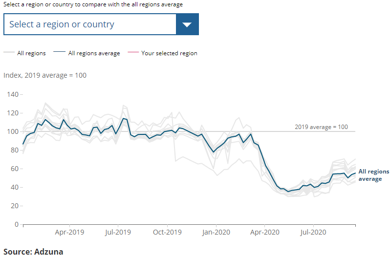

The East Midlands continued to see the strongest recovery in the volume of job adverts, whereas London saw the weakest recovery, with job adverts remaining below half of their 2019 average
━ All regions
━ All regions average
━ Your selected region
